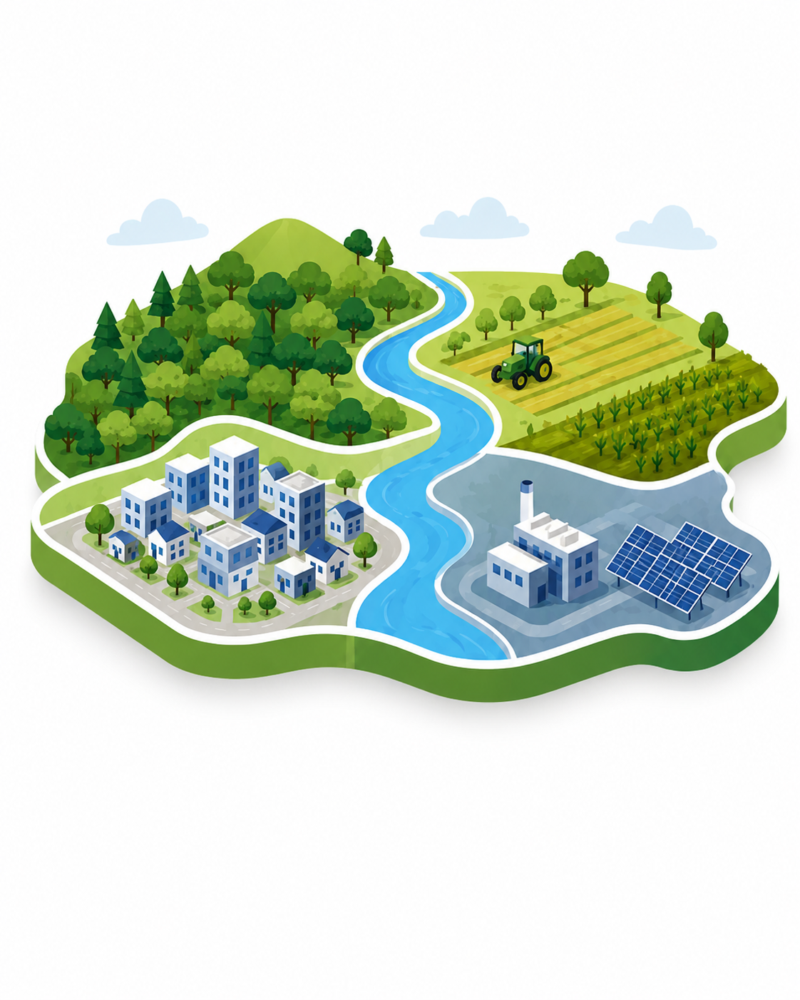

Ordenamiento Ecológico Local
Elaboración, actualización y acompañamiento técnico en instrumentos de planeación ambiental territorial.
- Diagnóstico ambiental
- Caracterización territorial
- Unidades de gestión ambiental
Consultoría Ambiental Especializada
Acompañamos a empresas, instituciones y desarrolladores en la gestión ambiental, cumplimiento normativo, ordenamiento ecológico, impacto ambiental y análisis territorial.
Brindamos acompañamiento especializado para proyectos públicos y privados, integrando análisis ambiental, territorial, normativo y forestal.

Elaboración, actualización y acompañamiento técnico en instrumentos de planeación ambiental territorial.

Desarrollo de estudios y gestión de autorizaciones ambientales para proyectos de infraestructura y desarrollo.

Generación de cartografía temática, análisis espacial y representación territorial para la toma de decisiones.

Asesoría técnica para el manejo, conservación, cambio de uso de suelo y regularización forestal.

Diseño de estrategias ambientales para empresas que buscan cumplir la normativa y mejorar su desempeño.

Acompañamiento en proyectos de mitigación, compensación ambiental y estrategias de sostenibilidad.